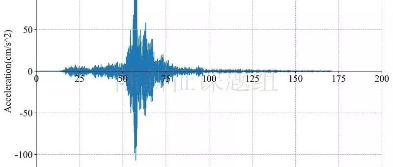

RED-ACT: 2月13日千岛群岛7.0级地震破坏力分析
致谢和声明：
感谢日本K-NET为本研究提供数据支持。本分析仅供科研使用，具体灾情和灾损分析应根据现场调查情况确定。
一、地震情况简介
据中国地震台网正式测定，北京时间2月13日18时33分（当地时间2月13日20时33分）在千岛群岛发生7.0级地震，震源深度150千米，震中位于北纬45.60度，东经148.95度。
二、强震记录及分析
20200213千岛群岛7.0级地震获得了20组地震动，由于地震动没有完全收集，可能还有更强的记录。典型地震记录分析如下：

(a) EW

(b) NS

(c) UD
图1 HKD072台站地面运动记录

图2 HKD072台站典型记录反应谱
三、地震动对典型城市区域破坏能力分析
利用密布强震台网在震后获取的实时地震动信息，再结合城市抗震弹塑性分析，就可以得到地震发生后不同地点的建筑破坏情况，为抗震救灾决策提供科学支撑。图3为根据20200213千岛群岛7.0级地震震中附近范围内台站记录分析得到的建筑震害分布示意图。图4为根据20200213千岛群岛7.0级地震震中附近范围内台站记录分析得到的人员加速度感受分布示意图。

图3 20200213千岛群岛7.0级地震不同台站地震记录破坏力分布图
（建筑抗震承载力取均值）

图4 20200213千岛群岛7.0级地震不同台站地震记录人员加速度感受分布图
（建筑抗震承载力取均值）
四、台站附近地震滑坡分析
根据当地地形数据、岩性数据和实测地面运动记录，可以计算得到不同滑坡体饱和比例下的滑坡分布，如图5所示。其中，底图为当地坡度分布图，每个圆圈代表每个台站的计算结果，圆圈中的数字代表发生滑坡的临界坡度，台站附近坡度大于该数值的地方滑坡发生概率高。

(a)滑坡体饱和比例为 0%

(b)滑坡体饱和比例为50%

(c)滑坡体饱和比例为 90%
图5 不同台站附近地震滑坡分布
五、地震动对典型单体结构破坏能力分析
(1) 对典型多层框架结构破坏作用
模型1：三层框架结构（感谢中国建筑设计研究院王奇教授级高工提供模型）
将HKD072台站记录输入立面布置如图6 (a)所示的6度、7度和8度设防的典型三层钢筋混凝土框架结构，得到其层间位移角包络如图6 (b)所示。


(a)立面布置示意图 (b)层间位移角
图6 典型三层钢筋混凝土框架结构
(2) 对典型砌体结构破坏作用
模型1：单层未设防砌体结构
选取图7所示纪晓东等开展的单层未设防砌体结构振动台试验模型，输入HKD072台站记录，分析结果表明该结构将处于完好状态。（纪晓东等，北京市既有农村住宅砖木结构加固前后振动台试验研究，建筑结构学报，2012,11,53-61.）

图7 单层三开间农村住宅砖木结构振动台试验
模型2：五层简易砌体结构
选取图8所示朱伯龙等开展的五层简易砌体结构足尺试验模型，输入HKD072台站记录，分析结果表明该结构都将处于完好状态。（朱伯龙等，上海五层砌块试验楼抗震能力分析，同济大学学报，1981,4,7-14.）


(a)平面图 (b)剖面图
图8 五层简易砌体结构布置
(3) 对典型桥梁破坏作用
模型1：某80年代公路桥梁（感谢福州大学谷音教授提供模型）
选取图9所示某80年代公路桥梁模型，输入HKD072台站记录，分析结果表明该结构都将处于完好状态。

图9 某80年代公路桥梁模型
模型2：某特大桥引桥（感谢福州大学谷音教授提供模型）
选取图10所示某特大桥引桥模型，输入HKD072台站记录，分析结果表明该结构都将处于完好状态。

图10 某特大桥引桥模型
RED-ACT震害应急评估结果讨论
RED-ACT的科学原理


---End---
相关研究
新论文：抗震&防连续倒塌：一种新型构造措施
长按识别二维码，关注我们的科研动态